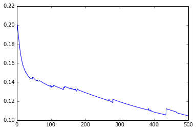
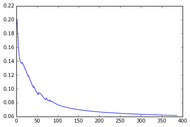
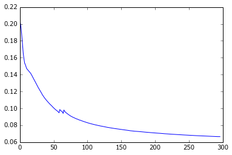
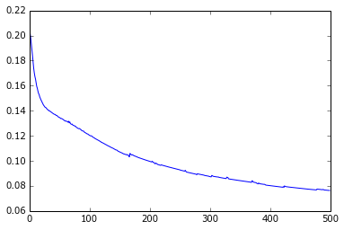
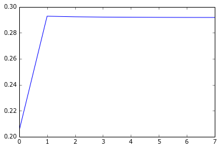
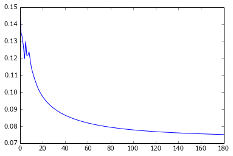
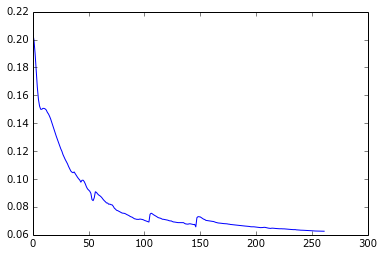
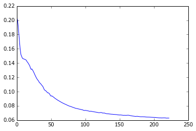
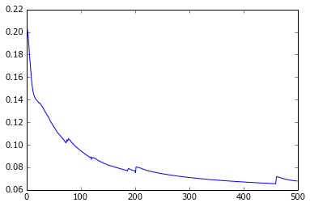

Session recording of a couple tests to check training time and convergence for a dataset such as bigrednight and for various gradient descent update methods. Set-up: Multi-layer perceptron with one hidden layer of 50 units. Input layer with all the pixels from 5 pictures. Gradient descent with adaptive learning rate, using the algorithms offered by Lasagne. Data = bigrednight: 345 color pictures of 40x40 pixels, each having an associated time stamp. This gives 24005 features This is a follow-up on experiments shown in sgdparams.html
Results: In most algorithms tried, using an adaptive learning rate significantly improved the stability of the descent and reduced the training time. The algorithms were all tried with a starting learning rate of 100, and at that rate the momentum algorithm gave the best results Using this algorithm with a mini-batch stochastic descent did not prove really helpful (the set size might be too small) With the momentum algorithm, out of (50, 100, 150, 200), 150 seems to provide the best results. => Using this as a default in later experiments, to be revisited when using real dataset.
In [1]: runfile('/home/romain/prog/photoweather/experiments/bigrednight/bigrednight.py', wdir='/home/romain/prog/photoweather/experiments/bigrednight')
In [2]: X, y = make_dataset('data')
In [3]: nn = Network(4800, learn_rate=100, update_func=lasagne.updates.sgd)
In [4]: costs, e = nn.train(X, y, max_epoch=500)
Starting a training run...
Total training time: 1210.908s in 500 epochs, cost: 0.104787
In [5]: plt.plot(costs)
Out[5]: [<matplotlib.lines.Line2D at 0x7f55dba12610>]

In [6]: nn = Network(4800, learn_rate=100, update_func=lasagne.updates.momentum)
In [7]: costs, e = nn.train(X, y, max_epoch=500)
Starting a training run...
Total training time: 567.373s in 388 epochs, cost: 0.061379
In [8]: plt.plot(costs)
Out[8]: [<matplotlib.lines.Line2D at 0x7f55ddbdd750>]

In [9]: nn = Network(4800, learn_rate=100, update_func=lasagne.updates.nesterov_momentum)
In [10]: costs, e = nn.train(X, y, max_epoch=500)
Starting a training run...
Total training time: 430.511s in 297 epochs, cost: 0.066539
In [11]: plt.plot(costs)
Out[11]: [<matplotlib.lines.Line2D at 0x7f55db86c550>]

In [12]: nn = Network(4800, learn_rate=100, update_func=lasagne.updates.adagrad)
In [13]: costs, e = nn.train(X, y, max_epoch=500)
Starting a training run...
Total training time: 348.059s in 219 epochs, cost: 0.148609
In [14]: plt.plot(costs)
Out[14]: [<matplotlib.lines.Line2D at 0x7f55ddc3fa50>]
In [15]: nn = Network(4800, learn_rate=100, update_func=lasagne.updates.rmsprop)
In [16]: costs, e = nn.train(X, y, max_epoch=500)
Starting a training run...
Total training time: 273.659s in 153 epochs, cost: 0.165926
In [17]: plt.plot(costs)
Out[17]: [<matplotlib.lines.Line2D at 0x7f55db731750>]

In [18]: nn = Network(4800, learn_rate=100, update_func=lasagne.updates.adadelta)
In [19]: costs, e = nn.train(X, y, max_epoch=500)
Starting a training run...
Total training time: 843.468s in 500 epochs, cost: 0.076339
In [20]: plt.plot(costs)
Out[20]: [<matplotlib.lines.Line2D at 0x7f55dfe604d0>]

In [21]: nn = Network(4800, learn_rate=100, update_func=lasagne.updates.adam)
In [22]: costs, e = nn.train(X, y, max_epoch=500)
Starting a training run...
Total training time: 11.592s in 8 epochs, cost: 0.291752
In [23]: plt.plot(costs)
Out[23]: [<matplotlib.lines.Line2D at 0x7f55e04d3b50>]

In [24]: nn = Network(4800, learn_rate=100, update_func=lasagne.updates.momentum)
In [25]: costs, e = nn.train(X, y, 20, max_epoch=500)
Starting a training run...
Total training time: 818.300s in 181 epochs, cost: 0.075020
In [26]: plt.plot(costs)
Out[26]: [<matplotlib.lines.Line2D at 0x7f55ddbb0290>]

In [27]: nn = Network(4800, learn_rate=200, update_func=lasagne.updates.momentum)
In [28]: costs, e = nn.train(X, y, max_epoch=500)
Starting a training run...
Total training time: 400.859s in 262 epochs, cost: 0.062556
In [29]: plt.plot(costs)
Out[29]: [<matplotlib.lines.Line2D at 0x7f55db7b4390>]

In [30]: nn = Network(4800, learn_rate=150, update_func=lasagne.updates.momentum)
In [31]: costs, e = nn.train(X, y, max_epoch=500)
Starting a training run...
Total training time: 350.123s in 223 epochs, cost: 0.062869
In [32]: plt.plot(costs)
Out[32]: [<matplotlib.lines.Line2D at 0x7f55dfe42790>]

In [33]: nn = Network(4800, learn_rate=50, update_func=lasagne.updates.momentum)
In [34]: costs, e = nn.train(X, y, max_epoch=500)
Starting a training run...
Total training time: 766.595s in 500 epochs, cost: 0.067837
In [35]: plt.plot(costs)
Out[35]: [<matplotlib.lines.Line2D at 0x7f55db706950>]

In [36]: